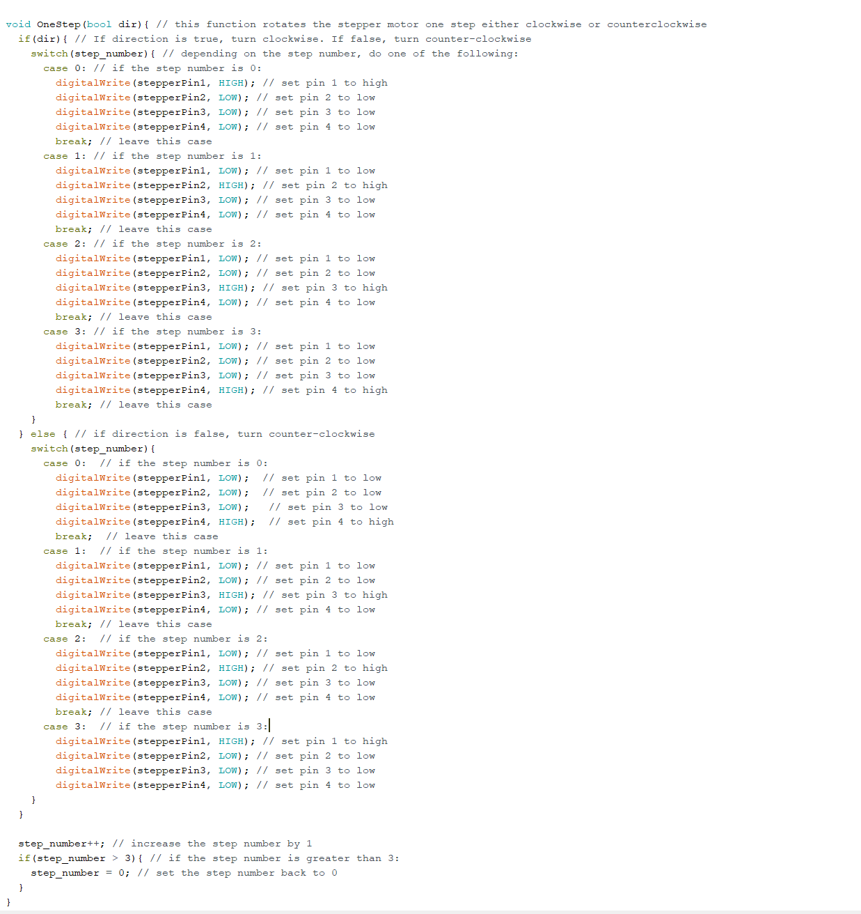

Jacob's Final Project
Here's the documentation for my final project
considering pulling up the blinds by the string, I decided this would lead to lot of stress on the components in our toolkits, if
they could handle the loads at all. So, I instead developed a device that would rotate the rod on my blinds that tilts the shades, allowing
more or less light into the room. I wanted this device to be controlled by a remote control as well as be able to function autonomously each morning.
To create this device, I utilized the stepper motor to rotate the blinds. Once I modeled and 3D printed a coupler that would connect the stepper
motor shaft to the blind opening rod, all I had to do was create a housing for the motor, arduino, IR sensor, and stepper controller. Once I
modeled and 3D printed the chasis, the hardware component of the project was done. Lastly, I had to write and flash the appropriate code
onto the arduino. Below are the steps I took to create this device.
on the arduino - no breadboard or resistors necessary.

connect to the blind opening rod. The Chasis also has a hole for the IR sensor to recieve its signal.

of the section below, where the code will automaticaly execute the 'automatic' fucntion after 2 seconds of being turned on
This second image shows the stepperOff() function, which cuts all power to the stepper motor, and also shows the different functions that determine how long and in which direction to turn the motor depending on which command is received from the IR sensor.
This third images shows how the program reads the IR sensor data and saves that data into a command variable, which is later used to determine which motor funciton to run.

This last image shows the different stepper functions, where each pin is turned on and off in a sequence to move the motor one step. The first section of code moves the motor clockwize,
and the other section moves the motor counterclockwise.
